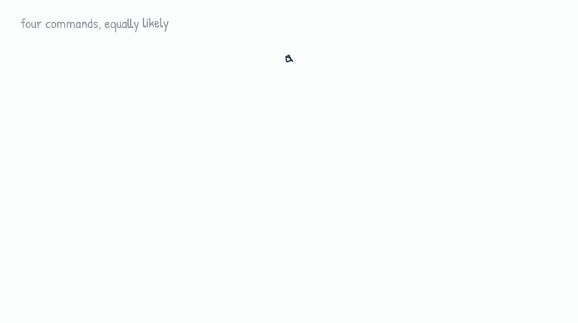
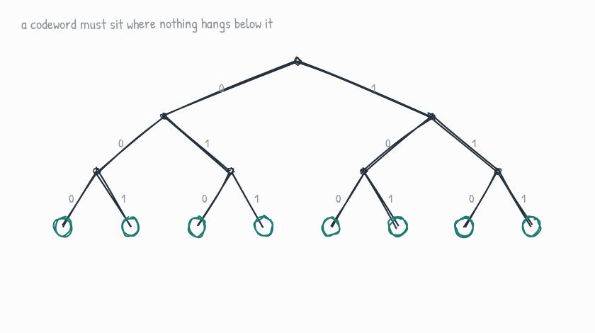
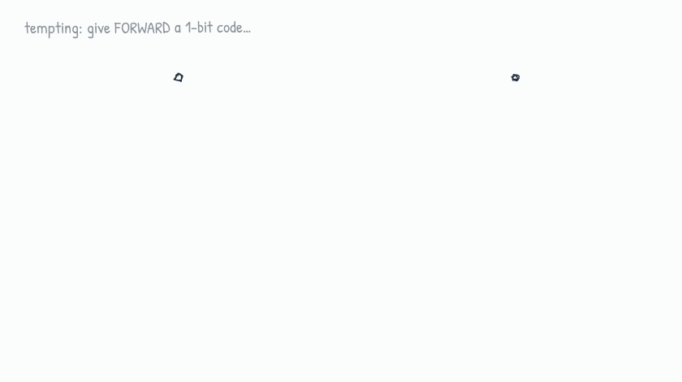
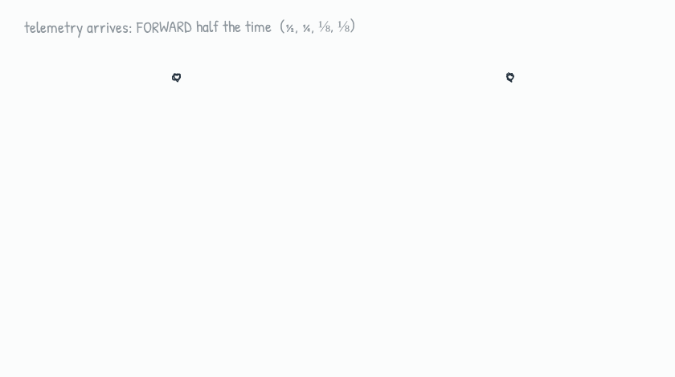
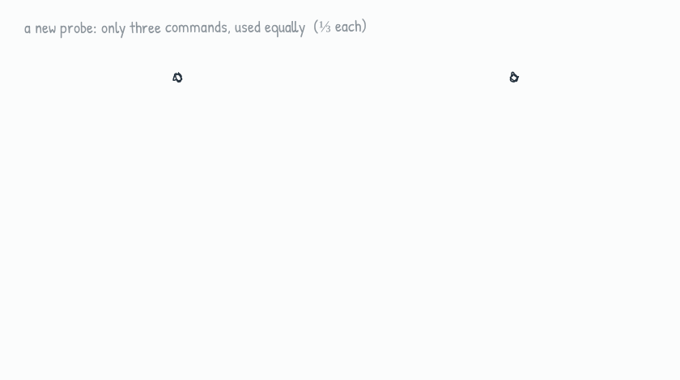
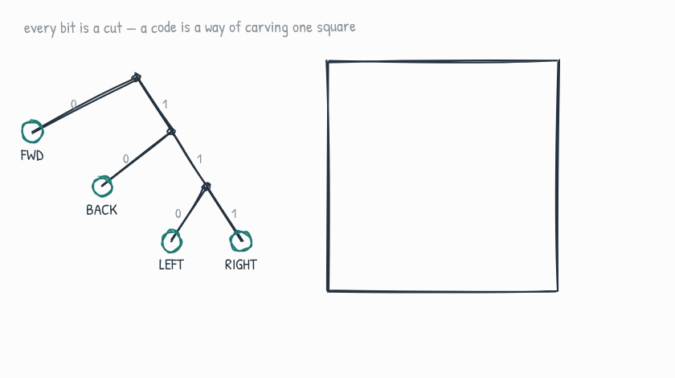
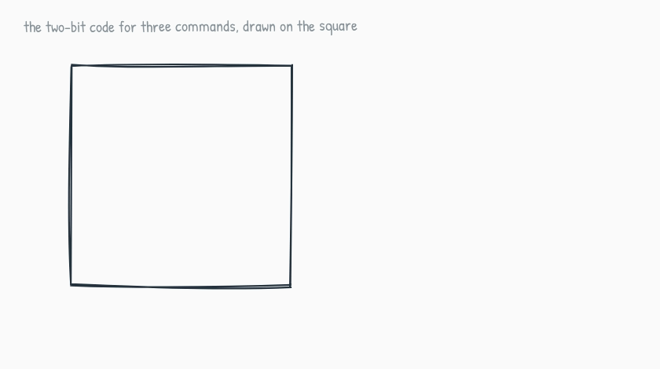
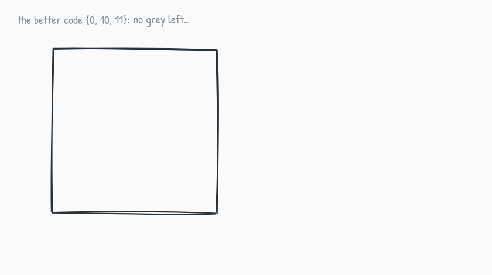
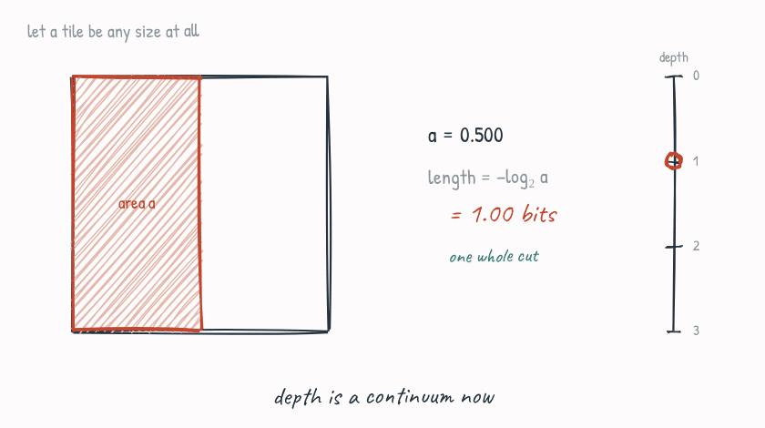
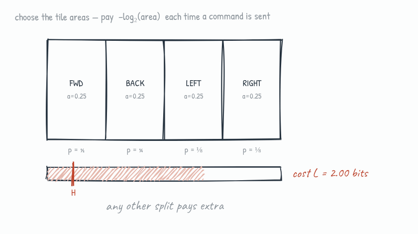

essay
The Shape of Information
A walk from a Mars rover’s steering commands to Shannon’s entropy.
In 1948, a mathematician at Bell Labs named Claude Shannon was chewing on a question that sounds almost too simple to be profound: can information be measured?
This was a practical question. Every symbol sent down a telegraph line, through an undersea cable, or over a radio link cost real money. Engineers were paying, quite literally, by the bit. So two questions mattered. Could a message written in something wasteful, like ordinary English, be recoded into fewer symbols without losing anything? And is there a floor, a hard limit past which no amount of cleverness can squeeze a message any further?
Shannon answered both. The answer to the second question is a single formula that now sits at the heart of every zip file, every video stream, and every cell in your phone’s radio. The formula is often presented as a definition, which hides the reasoning that produced it. We will reconstruct that reasoning with a rover, a marker, and a square.
A payload on Mars
Imagine we’ve landed a small rover on Mars, and we steer it from Earth. The deep-space link is agonizingly slow and every transmitted bit costs power, time, and bandwidth. The rover understands four commands:
FORWARD · BACK · LEFT · RIGHT
Radio gives us two symbols to work with: 0 and 1. Each command must therefore be spelled as a string of bits. The most natural spelling uses two bits for each of the four commands.
↑ FORWARD:00
↓ BACK:01
← LEFT:10
→ RIGHT:11
There’s a picture hiding in that codebook. Read a codeword bit by bit: each 0 branches left, each 1 branches right. Every code is secretly a binary tree, and each command lives at the end of a path.
Each bit is a fork in the road. Four commands, two forks each: an average of 2 bits per command.

Two bits per command. Can we do better? Before we try, there is a rule of the game we need to make explicit.
The rule: no codeword may sit above another
The rover doesn’t receive commands one at a time in neat envelopes. It receives one unbroken stream of bits: 000111001101… There are no commas in radio. So the rover must know, the instant a codeword ends, that it has ended.
Suppose we’d assigned FORWARD = 0 and BACK = 01. The stream begins 0…. Is that FORWARD, or the first half of BACK? The rover has to wait, and sometimes waiting doesn’t even resolve it. The fix is a simple discipline: no codeword may be a prefix of another. In tree language, codewords may only sit at the ends of branches, at leaves, with nothing hanging below them.
That discipline has a price. The moment you claim a node as a codeword, everything beneath it becomes unusable. No later codeword can hang below that node.
Claim a shallow node and half the tree vanishes with it. Claim a deep one and you barely spend anything. Depth is exactly how much of the tree a codeword consumes.

Now consider a tempting idea. Give FORWARD the one-bit code 0. Claiming 0 wipes out half the tree, so the other three commands must crowd into what remains, at depths 2, 3, and 3. If all four commands are used equally often, the average comes out to ¼·(1+2+3+3) = 2.25 bits, which is worse than the plain two-bit code.
One command got cheaper; three got more expensive. Under equal use, the balanced tree was already optimal.

So with four equally likely commands, 2 bits is the honest best. Fine. But that “equally likely” was doing a lot of quiet work.
The distribution changes everything
A few weeks into the mission, telemetry comes back. The rover spends most of its life driving FORWARD: half of all commands. BACK is a quarter. LEFT and RIGHT are an eighth each.
Re-run the same comparison with these frequencies and the result changes. The lopsided tree now wins:
Changing the command frequencies changes which tree is cheaper. The shortest codes should go to the most frequent commands.

Before moving on, squint at those depths: the ½ command sits at depth 1, the ¼ command at depth 2, the ⅛ commands at depth 3. In every case, depth = −log₂(probability). File that away. It will not turn out to be a coincidence.
Three commands, and an awkward question
The mission expands. A second, simpler probe launches. It understands only FORWARD, LEFT, RIGHT, and it uses all three about equally.
The lazy code assigns two bits each and simply never uses 11. Average: 2 bits, with a whole codeword rotting unused. We can do better by rebalancing the tree: give FORWARD the code 0, LEFT 10, RIGHT 11. Average: ⅓·(1+2+2) = 1.67 bits. Better!
1.67 beats 2.00. One question remains: is 1.67 actually the floor, or is it simply the best whole-bit answer?

Trees only offer whole-number depths: 1, 2, 3, and so on. This makes the phrase “best possible” difficult to examine. A different picture will help.
The budget square
Take a square with area 1. This square contains the entire coding budget: every codeword we could assign, collected in one place. We can represent a code by carving the square into tiles, one tile per command.
Each bit makes a cut. The first bit slices the square in half: the left half contains codewords starting with 0, and the right half contains those starting with 1. The second bit halves one of those regions again. A codeword of length ℓ is a tile reached after ℓ cuts. Since every cut halves the area:
Long codeword → many cuts → tiny tile. Short codeword → few cuts → big tile. And the tiles of a complete code fill the square exactly: ½ + ¼ + ⅛ + ⅛ = 1.

Everything we learned from trees translates instantly, and gets easier to see:
- The prefix rule is now just “tiles don’t overlap.” Claiming a node was erasing a subtree; here, claiming a tile simply uses up that part of the square, and nobody else can have it.
- The rationing intuition is physical: the square is scarce. Give one command a big tile and everyone else gets slivers. Thus, rare commands should get the small tiles. A long codeword costs little when it is seldom sent.
- Waste is visible. If some bitstring is never assigned, its tile sits there grey and unused.
We can see the waste directly by drawing the lazy two-bit code for the three-command probe on the square:
The 11 tile can never arrive. A quarter of the budget is wasted. Grey patches are compression left on the table; a fully compressed code leaves no grey.

So we rebalance, as before, into {0, 10, 11}. The grey disappears and the square is full. Have we reached the floor?
No grey left. But look closely: FORWARD holds a ½ tile and is used ⅓ of the time. The tiles fill the square, yet their sizes don’t match the job.

A ½ tile is doing a ⅓ job. The square is fully spent, yet the allocation is wrong. The tree cannot correct it because binary cuts produce only halves, quarters, eighths, and so on. This suggests a new question:
Could a tile have an area that isn’t a power of ½, say exactly ⅓?
Depth, unchained
On the square, there’s nothing stopping us. Draw a region of any area you like. And its “length” comes straight from the same law that governed every tile so far, just read in reverse:
A tile of area ½ costs one cut, so its length is 1. A tile of area ¼ has length 2. A tile of area ⅓ has length −log₂(⅓) ≈ 1.585 bits, a fraction of a bit. Tree depth, which used to advance in whole steps, has become continuous.
Slide the tile to any size; its length slides with it, right off the whole-number grid. The discrete tree was just the special case where every tile landed on a grid line.

(A single 1.585-bit codeword does not physically exist. Codewords contain a whole number of bits. However, if we collect many commands into blocks and encode those blocks, the average cost per command approaches these fractional values. The square describes this limiting cost; individual whole-bit codewords approximate it.)
Now line up the two facts the square has quietly handed us. First, the tiles of a full code exactly fill the square:
Second, the command probabilities also sum to one, since some command is always sent:
Two quantities, both budgets, both of size exactly 1: the areas we choose, and the frequencies the world imposes. The entire problem of compression is now one sentence: spend the first budget as wisely as possible given the second.
The optimization
Say the command probabilities are p₁, …, pₙ, and we assign tile areas a₁, …, aₙ. Each use of command i costs its length, −log₂ aᵢ, and command i arrives a fraction pᵢ of the time. So the expected cost per command is:
minimize L(a) = − Σᵢ pᵢ · log₂(aᵢ) subject to Σᵢ aᵢ = 1
This is a textbook job for a Lagrange multiplier. Form the Lagrangian:
𝓛 = − Σᵢ pᵢ log₂ aᵢ + λ ( Σᵢ aᵢ − 1 )
Differentiate with respect to each aᵢ and set to zero (writing ln 2 into the multiplier to keep things tidy):
∂𝓛/∂aᵢ = − pᵢ / aᵢ + λ = 0 ⟹ aᵢ = pᵢ / λ
Every optimal area is proportional to its probability. The constraint pins down the constant:
Σᵢ aᵢ = (1/λ) Σᵢ pᵢ = 1/λ = 1 ⟹ λ = 1
So the minimizer is simply:
aᵢ = pᵢ: give every command a tile equal to its probability.
Here are the four rover commands (½, ¼, ⅛, ⅛), with the tile allocation changing and the expected cost tracked underneath. Every allocation except one pays an extra cost.
Make a tile too large or too small, and the cost rises. The floor is reached at a = p.

Substitute the optimal areas back into the expected cost:
The floor on compression, the number no code can beat, is therefore:
H = − Σ p log₂ p
We can read entropy as the average number of cuts required when every command receives a tile equal to its probability. For our rover, H = 1.75 bits, and the lopsided tree we found by hand achieves it because its probabilities happen to be powers of ½. For the three-command probe, H = log₂ 3 ≈ 1.585 bits, below the 1.67 achieved by the best whole-bit tree. The difference comes from rounding. Individual codewords need a whole number of bits, while the ideal lengths may be fractional. Coding commands in large blocks makes this gap approach zero.
Shannon’s answer is yes: information can be measured. A predictable stream, in which one command holds nearly all the probability, has one large tile and costs almost nothing. A stream in which every command is equally likely has equal tiles and the greatest possible cost. Entropy measures that average cost in bits.
We began with four steering commands. The same accounting gave us a general measure of information.
Originally published on Substack. Subscribe there for new posts.